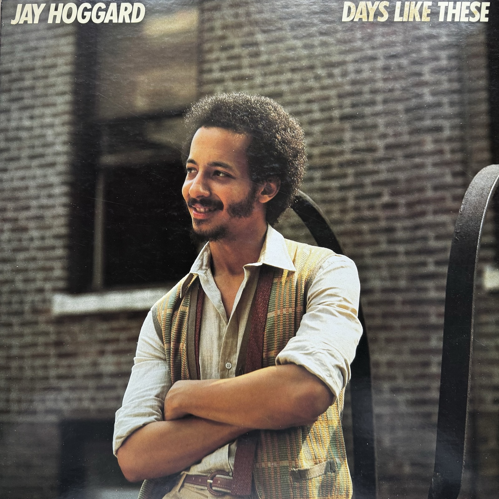

Jay Hoggard
美国爵士颤音琴演奏家，曾在卫斯理大学学习民族音乐学。他写了七首中的四首，录音中交替使用 Deagan Commander 电颤音琴和 Musser M-55 原声颤音琴。内页特别提到，他会用手控制颤动的幅度和速度。
Arista / GRP · 日本版 25RS-55
同一双琴槌，可以打出清楚的节奏，也可以让旋律悬在空气里。Jay Hoggard 的首张个人专辑在电颤音琴与原声颤音琴之间换色，从带打击乐独奏的融合爵士，一路听到有人声、管乐和弦乐的同名尾曲。
按唱片顺序开始听 ↓
美国爵士颤音琴演奏家，曾在卫斯理大学学习民族音乐学。他写了七首中的四首，录音中交替使用 Deagan Commander 电颤音琴和 Musser M-55 原声颤音琴。内页特别提到，他会用手控制颤动的幅度和速度。
两人共同制作，Grusin 负责全辑编曲、指挥并演奏键盘，还写了开场曲。其余两首外来的作品分别由 Michael McDonald 和 Al Jarreau 创作；两首在这里都可以对照原唱，听颤音琴如何接过人声的角色。
Buddy Williams 打鼓；电贝斯大多由 Francisco Centeno 演奏，A2 换成 Marcus Miller。Dave Valentin 吹长笛，Chico Freeman 在 B3 吹次中音萨克斯独奏；Naná Vasconcelos 与 Sammy Figueroa 等人带来层次丰富的打击乐。
曲序按封底，作曲与乐器按内页。展开正在播放的一面，先抓住每首的听点，再听颤音琴怎样与不同乐器交接。
作曲：Dave Grusin
听四种声音的起音
先找电颤音琴敲下去的那一瞬，再听 Dave Valentin 的长笛怎样用气流把音连起来。电钢琴和合成器增加了背景的厚度；等 Naná Vasconcelos 的说话鼓独奏出来，留意鼓音怎样弯曲，像在用音高说话。
作曲：Michael McDonald
听颤音琴接过歌唱的句子
这首源自 The Doobie Brothers 的歌曲。熟悉原唱的话，可以在心里跟唱，再听 Hoggard 怎样用敲击和余响处理原来由人声连成的句子。脚下则跟 Marcus Miller 的电贝斯：听它和 Buddy Williams 的鼓如何维持推进，再留意康加鼓从拍子的空隙里露出来。
作曲：Jay Hoggard
换到原声琴，专听一个音的尾巴
前两首用 Deagan 电颤音琴，这里换成 Musser M-55 原声琴。先听琴槌落下后的金属余响，再听 Dave Grusin 的钢琴如何在这些尾音旁边补上和声。音色差异在乐句空隙里最容易辨认，可以趁翻面前与上一首对听。
作曲：Jay Hoggard
先找 cuíca，再听桑巴怎么分层
开头可以先跟电贝斯与鼓，再把注意力移给康加鼓和长笛。Naná Vasconcelos 的 cuíca 独奏是这一首的路标：这种摩擦鼓能发出像叫声一样滑动的音高，和颤音琴一槌一个清楚音高的发声方式正好形成对照。
作曲：Al Jarreau
听四个人如何留出空间
这首改编自 Al Jarreau 的歌，内页只列颤音琴、电钢琴、电贝斯和鼓。可把原唱的一句想成一口气，再听颤音琴如何用分开的起音和延续的余响做出类似的呼吸。和前一首连听，尤其容易听清鼓与电贝斯怎样给旋律留位置。
作曲：Jay Hoggard
听敲击的触感换成吹奏的气息
这里回到 Deagan 电颤音琴，最鲜明的对照是 Chico Freeman 的次中音萨克斯独奏。注意琴音如何先敲出轮廓，萨克斯又怎样用气息把长句接起来。独奏换人时，也可以继续追踪贝斯：它是两种音色之间共同的参照。
作曲：Jay Hoggard
听原声琴如何站在更大的合奏里
同名尾曲用 Musser 原声颤音琴，内页还列有 Patti Austin、Luther Vandross 等五位歌手，以及管乐、弦乐声部。先追最容易认出的琴槌起音，再把注意力移到较长的人声与弦乐声线；比较它和四人编制的《We Got By》，同一件乐器怎样在大小不同的合奏里保持清晰。
封底印有 Arista / GRP 标识、目录号 25RS-55 及 1979 年版权年份。这份日本版由 Nippon Phonogram 制造与发行，封套原标价 ¥2,500。封套摄影署名 Anthony Barboza，两张内页分别列出两面的逐曲乐手和录音制作资料。